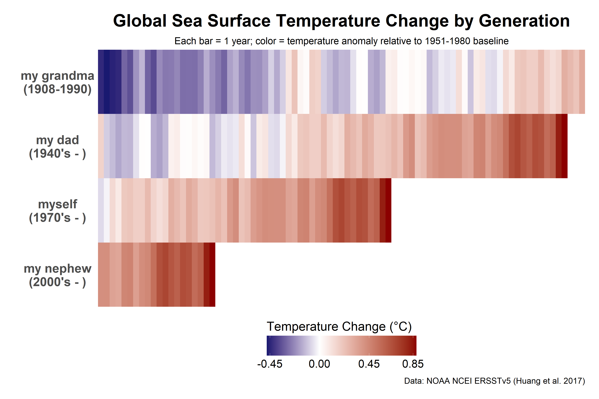

Ocean Bight, LLC
Marine Ecological Consulting
Ocean Bight is a marine ecological consulting practice specializing in research on marine food webs, glacial fjord ecosystems, and integrated wildlife monitoring and assessments.
Recent human-driven warming of the atmosphere, oceans, and land is affecting every region of the globe. In Alaska's subarctic and Arctic oceans, we are already seeing warmer ocean temperatures, increased freshwater runoff, significant glacier and sea ice loss, and extreme marine heatwaves. These changes will impact fish and wildlife populations that support Alaska's economy through recreation, tourism, and commercial fisheries.
Ocean Bight offers research and consulting services to address these challenges through data collection, citizen science, and public engagement to raise climate awareness. This website provides a platform to share compelling science stories, data visualizations, and invites public participation.
Side Projects
With the help of AI tools for programming, I'm working on side projects to help document science and engage the public in research and marine conservation. One of these side projects is this website, which is under active development, so check back for updates!
Climate Data Stories
Climate Data Stories transform publicly available climate datasets into visual narratives that connect the science to our everyday lives. By framing global trends through a compelling personal lens, these stories aim to make the impacts of climate change tangible and relatable for a broader audience.
A Record of Warming Seas Across Generations
For more than a century, global sea surface temperatures have shifted from cooler-than-average conditions (blue) to record warmth (red), with each successive generation experiencing less of the cool past and more warming in a rapidly changing climate. Data: ERSST v5 (Huang et al. 2017).
The figure above shows the changes in sea surface temperatures experienced by four generations in my family, with each vertical bar representing one year and colors showing change from a mid-20th-century baseline (blue = cooler, red = warmer). From my grandmother's cool childhood seas to my nephew's record-warm oceans, the climate we experience during our lifetime shapes how we understand the world. This data graphic was inspired by one shared by Vasco Mantas here.
Chomp Watch
Chomp Watch is a citizen science initiative that engages fishers and researchers in collaborative data collection to understand salmon feeding ecology and marine ecosystem health. Below is an example of how image data can quantify changes in prey composition over time.

Chinook salmon diet composition 2019-2025: Average fish counts by forage species (color) and year (x-axis). Sample size (n), and number of empty stomachs per year are noted. Error bars are standard errors (SE). Empty stomachs are not included in the average fish counts.

Example Chinook salmon stomach photo for Chomp Watch. Thanks to image data contributors including recreational fishers John Moran, Lara Dzinich, Chris Lunsford, Dave Berger, Pat Malecha, Shawn Carey, Marina Lindsey, Andrew Dimond, and others
Gallery